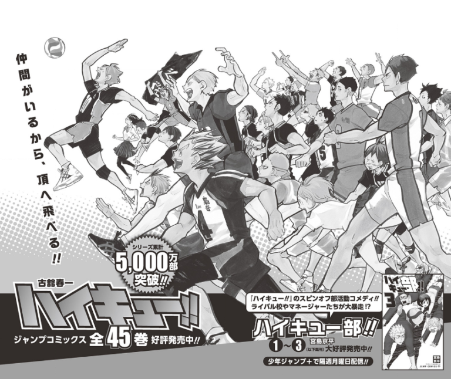

<h1> Haikyuu !! </h1>

<body>
    La historia arranca con la formación del equipo protagonista que acompañaremos durante la aventura que supone este manga. 
    Conoceremos sus personalidades, sus motivaciones y sus inseguridades y con el transcurso del tiempo seremos testigos de sus conflictos y su evolución, tanto a nivel personal como deportivo.
    Esto marca el ritmo de la serie porque desde el inicio es hilarante, ingeniosa y vulnerable.

    Lógicamente, el siguiente paso era avanzar en dirección a los entrenamientos porque tenían doble propósito: por un lado, seguir a Karasuno en su travesía para convertirse en un club bien acoplado y unido, y por el otro, conocer a sus rivales.
    Los campamentos son una puerta para que nuevos personajes entren a la historia, no solo como miembros de los equipos que deben derrotar, sino como piezas que se unirán para siempre a la vida de los protagonistas, aunque el alcance de esa unión no se apreciará sino hasta mucho más adelante. 
    Los entrenamientos en más de una ocasión han dejado una huella más profunda en los personajes que los propios partidos, pero no significa que los enfrentamientos oficiales sean menos interesantes. Todo lo contrario.

    Los partidos son inciertos porque Furudate siempre encuentra una forma de sorprenderte, ya sea por cómo se anotó un punto, por un bloqueo inesperado o la superación de dicho bloqueo, por la presentación de un nuevo ataque, por la transformación de un personaje, por la emoción de la victoria o el dolor de la derrota. 
    En Haikyuu, ningún partido te deja indiferente. Puedes sentirlos todos y todo aquel que esté familiarizado con la historia sabrá que duele incluso cuando Karasuno gana.


</body>

